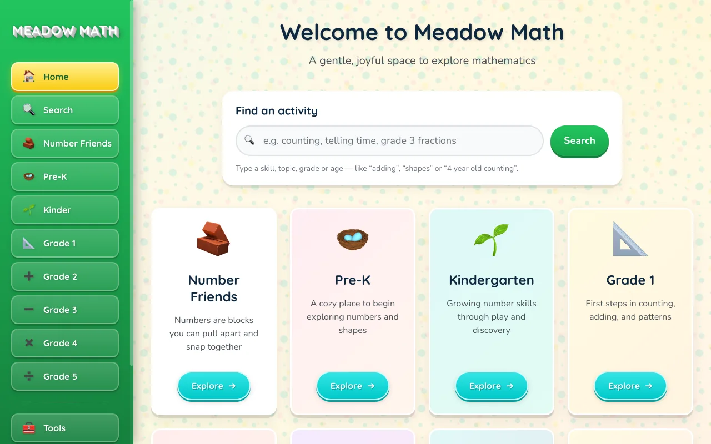
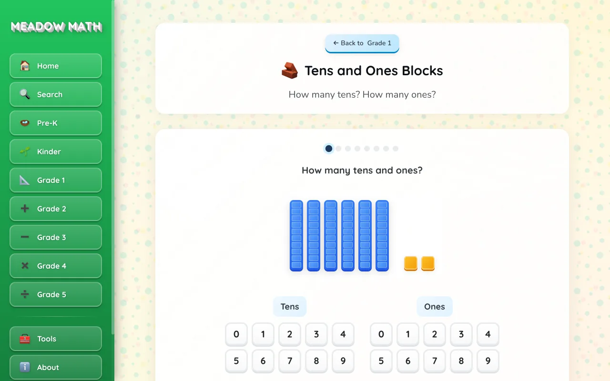
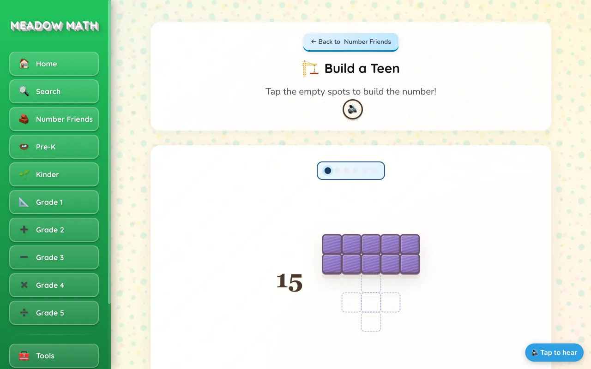

Meadow Math
A small, calm math world for children from Pre-K to Grade 5. Children learn by doing: they move pieces, try ideas, and see what changes.

(open full size)Screenshots


(open full size)

(open full size)What it is
Meadow Math focuses on hands-on interaction instead of explanation, and on visual thinking instead of text. There are no videos to binge and no lessons to rush through. Each activity is an invitation to try, notice, and discover.
There are no timers, no streaks, and no pressure to perform. Activities are grouped by grade, and you can search by skill, topic, grade, or age, like "adding", "shapes", or "4 year old counting".
How it began
Meadow Math started at home. Our son watched his mother teach his little sister through counting, drawing, and small math games, and he asked: "Can we make a math game website for kids?"
My wife came up with the ideas and content for the activities. I set up the overall structure. Our 10-year-old son used AI tools like GitHub Copilot to build most of the activities himself.
Privacy
Meadow Math needs no account and collects no personal information about you or your children. If progress or preferences are saved, they stay in your browser's local storage.
The website uses Cloudflare Web Analytics on every page to count visits in an anonymous, aggregated form. Read the full privacy and terms.
Help it grow
Meadow Math is open source and grows slowly, on purpose. You can report a bug or share an idea, improve an activity, help translate the site, or share it with families and teachers.